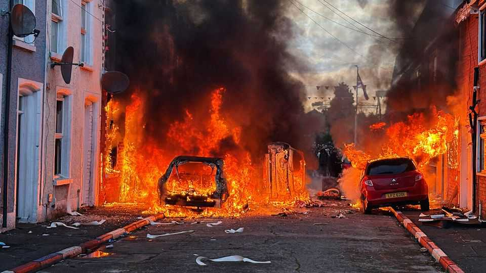

A frenzied knife attack by a refugee has put Northern Ireland on edge
It set off destructive riots in Belfast and beyond
June 11th 2026

Rush hour in Belfast on June 9th didn’t happen at the usual 5pm. By mid-afternoon offices, shops and government buildings started to empty. By teatime Northern Ireland’s capital was more deserted than on a public holiday.
The previous night a Sudanese refugee had been caught on video viciously stabbing a local man. Police captured the suspect almost immediately; his victim survived, remarkably. Within hours, anonymous posts began spreading across the internet, advertising protest locations that evening. These were not so much invitations as threats to shut down much of Northern Ireland. They made clear that businesses were expected to close.
It is a tactic that hardline protesters have repeatedly used in the region, to devastating effect. It brings things to a standstill. Before it was even dark, protesters had closed several arterial routes around Belfast. A Glider—the large bus-like vehicles in the city’s rapid transit system—was burnt out. Petrol bombs were thrown at police in Newtownabbey, north of the city. Several cars were burned. A police car was set alight in Portadown, 40km south-west of Belfast. Riot police could do little.
The real targets were foreigners. Doors were kicked in, cars torched and homes set alight. A child was among those evacuated in an armoured police vehicle as their home went up in flames. Two women were still in their care-worker uniforms when police rescued them from arsonists.

This was the region’s third consecutive year of anti-migrant violence. Unlike protests in mainland Britain, the unrest involves the organisational muscle of pro-British loyalist paramilitaries who have survived for over a quarter of a century after the Good Friday Agreement.
Claire Hanna, the leader of the nationalist SDLP, called it a “racist pogrom”. The Police Federation said it had been “reminiscent of fascism and racism”. Although pro-British unionist leaders condemned the violence, they emphasised understanding of anti-migrant sentiment. Jim Allister, whose TUV party has an electoral alliance with Reform UK, decried “the importation of an alien culture”.
Hadi Alodid, the man charged with attempted murder in the attack, had travelled to Northern Ireland from the Republic of Ireland, crossing the open land border. He was not an illegal immigrant. The Conservative Party’s shadow Northern Ireland secretary suggested that there should be intelligence-led immigration checks on the British side of that border, as already happens on the Irish side.
On June 10th a riot closed Northern Ireland’s busiest roundabout, in Glengormley just north of Belfast. For three hours police were sporadically attacked with masonry and petrol bombs. Children as young as four were taken by their parents to watch among a crowd of about 1,000. A grandmother on a walking stick disapproved—not of the violence, but of the indiscriminate destruction of the street: “It’s themmuns [gesturing to where she believed migrants lived] they want to be doing it to, not our own,” she said angrily. Recent history suggests this disruption will fade after a few days, but it will keep recurring.■
For more expert analysis of the biggest stories in Britain, sign up to Blighty, our weekly subscriber-only newsletter.